Web API quản lý danh mục sách và tài liệu học tập, chạy trên cổng http://localhost:5100.
Khởi tạo Solution cấu trúc 2 dự án src/Catalog.Api và src/Catalog.Client, thiết lập file .gitignore và biên dịch toàn bộ mã nguồn.
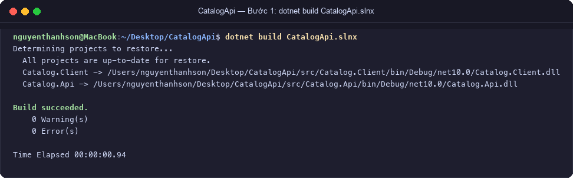
Gửi yêu cầu GET đến gốc / để kiểm tra trạng thái hoạt động của máy chủ Catalog.Api.
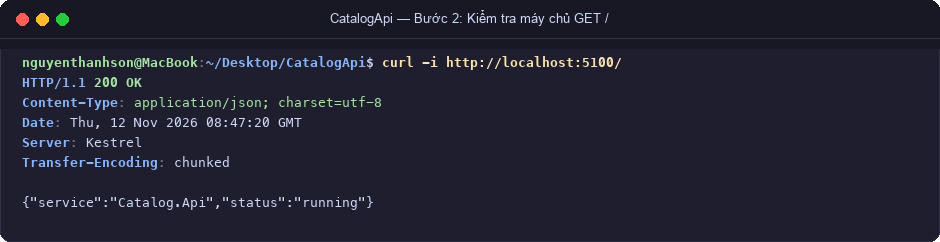
Truy vấn danh mục sản phẩm từ bộ nhớ trong qua endpoint GET /api/products.
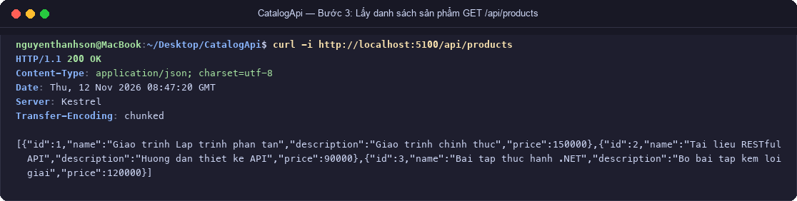
Kiểm thử 2 tình huống: sản phẩm có tồn tại (Id = 1) và sản phẩm không tồn tại (Id = 999).
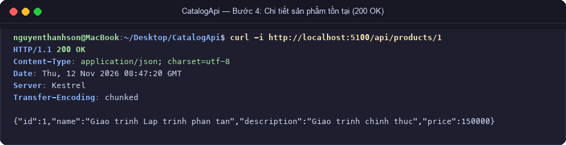
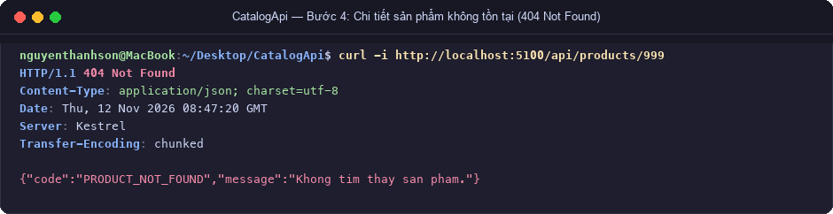
Tiếp nhận payload JSON: trường hợp hợp lệ trả về 201 Created + Header Location; trường hợp vi phạm nghiệp vụ trả về 400 Bad Request.
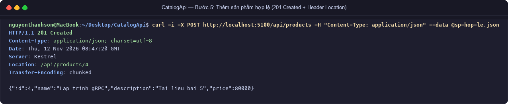
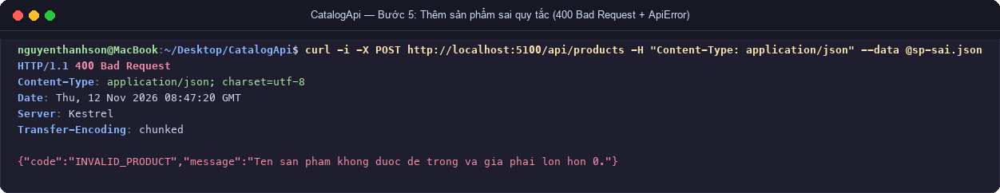
requests.httpTập kiểm thử 10 kịch bản bao phủ đầy đủ các mã trạng thái HTTP (200, 201, 400, 404, 415, 405).
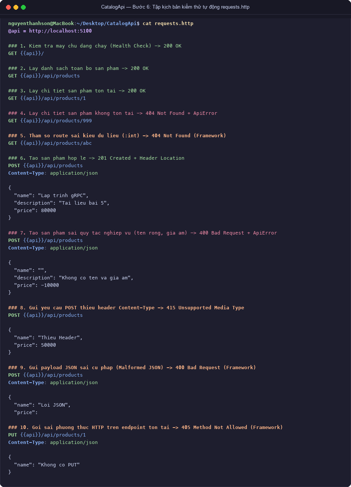
Chạy Catalog.Client thực thi chuỗi giao tiếp 4 nấc: Lấy danh sách -> POST tạo mới -> GET chi tiết theo Location -> Bắt lỗi 400 và in ApiError an toàn không bị sập.
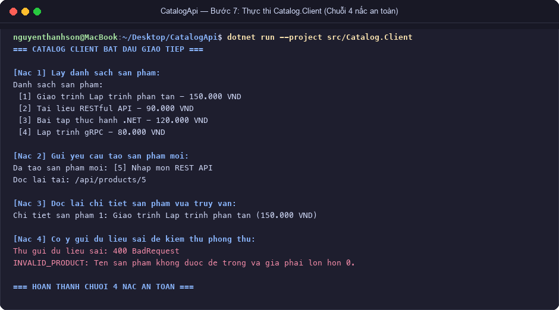
Mỗi bước trong quá trình thực hành đều được commit riêng biệt với thông điệp rõ ràng, tuân thủ kỷ luật phát triển phần mềm.
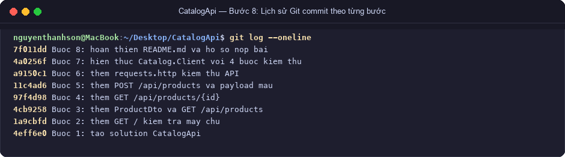
| STT | Kịch bản phá thử | Yêu cầu HTTP | Mã kỳ vọng | Mã thực tế | Đánh giá kết quả |
|---|---|---|---|---|---|
| 1 | Tra cứu sản phẩm không có trong DB | GET /api/products/999 |
404 | 404 | Đạt: Trả về mã lỗi PRODUCT_NOT_FOUND |
| 2 | Truyền tham số route sai kiểu int | GET /api/products/abc |
404 | 404 | Đạt: Route constraint :int chặn chuẩn xác |
| 3 | Tạo sản phẩm với tên để trống | POST /api/products (name: "") |
400 | 400 | Đạt: Trả về lỗi INVALID_PRODUCT |
| 4 | Tạo sản phẩm với giá âm (-10000) | POST /api/products (price: -10000) |
400 | 400 | Đạt: Trả về lỗi INVALID_PRODUCT |
| 5 | Gửi POST nhưng quên Header Content-Type | POST /api/products (no header) |
415 | 415 | Đạt: Kestrel từ chối Unsupported Media Type |
| 6 | Gửi cú pháp JSON dị dạng (Malformed JSON) | POST /api/products (JSON thiếu giá trị) |
400 | 400 | Đạt: Trình phân tích ASP.NET Core chặn 400 Bad Request |
| 7 | Gọi sai phương thức HTTP trên URI hợp lệ | PUT /api/products/1 |
405 | 405 | Đạt: Trả về 405 Method Not Allowed |
Hệ thống nộp bài tập trực tuyến với 3 cổng kiểm tra logic nghiêm ngặt, chạy trên cổng http://localhost:5000.
Khởi tạo Solution RestfulClientServer.slnx gồm src/Submission.Api và src/Submission.Client.
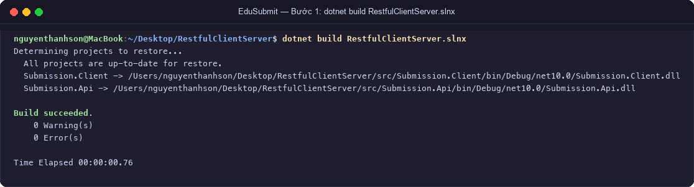
Kiểm tra khả năng tiếp nhận yêu cầu và xác thực định danh dịch vụ Submission.Api.
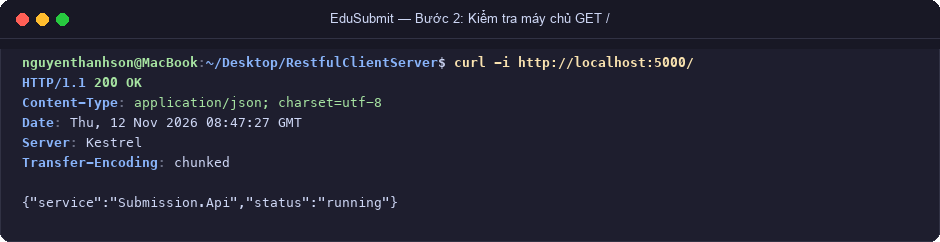
Truy vấn toàn bộ danh sách bài tập (bao gồm bài đang mở và bài đã đóng) qua GET /api/assignments.
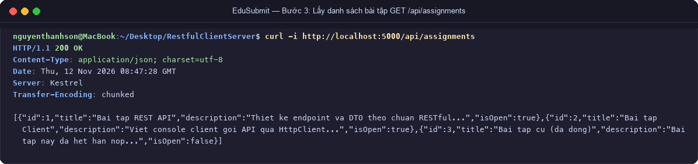
Kiểm thử tra cứu bài tập tồn tại (Id = 1) và bài tập không tồn tại (Id = 999).
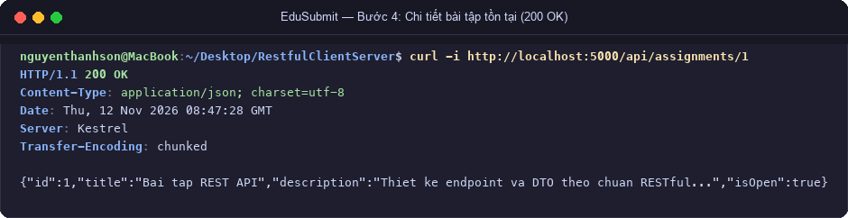
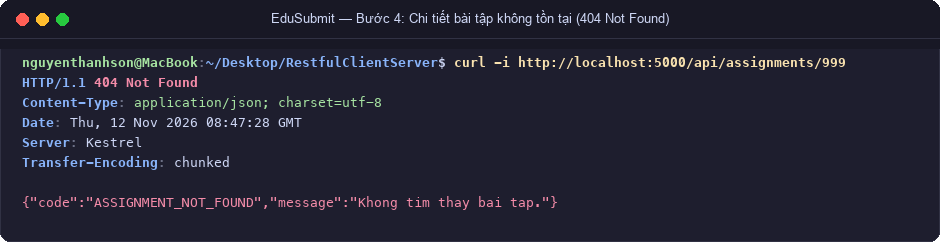
Quy trình nộp bài qua 3 cổng: (1) Bài tập tồn tại -> (2) Bài tập còn mở hạn -> (3) Mã SV và URL kho không rỗng.
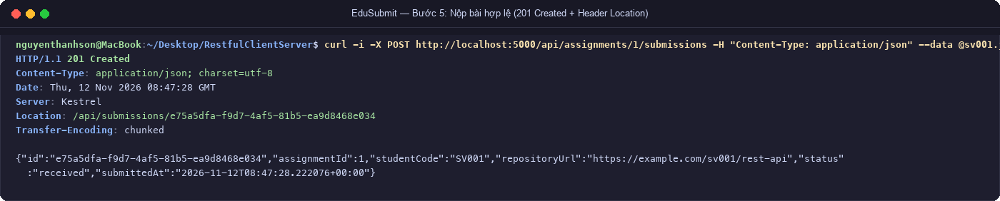
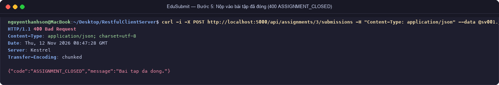
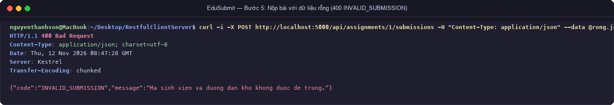
Tra cứu lượt nộp vừa tạo qua mã GUID ngẫu nhiên và tra cứu một GUID không tồn tại.
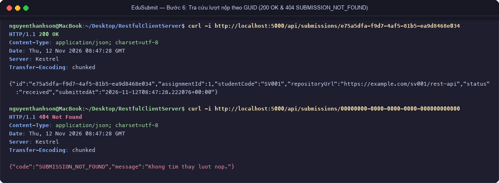
requests.httpTập kiểm thử 11 kịch bản toàn diện, sử dụng biến môi trường và biến động {{createSubmission.response.body.$.id}}.
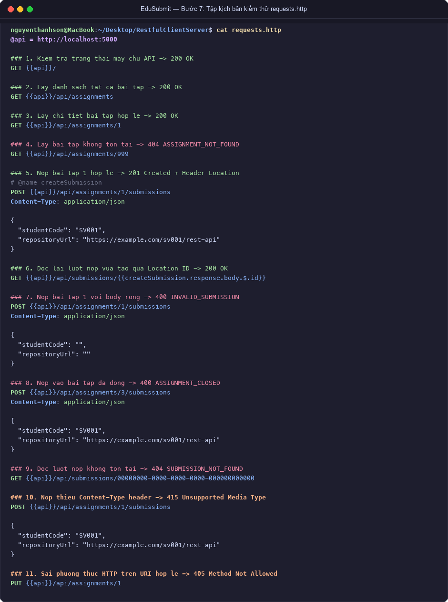
Chạy Submission.Client giao tiếp API qua 4 nấc: Lọc bài đang mở -> Nộp bài -> Đọc lại qua Header Location -> Bắt lỗi 400 xử lý an toàn không sập app.
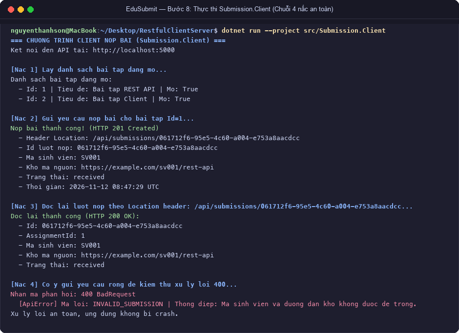
8 commit thể hiện rõ ràng toàn bộ lộ trình hiện thực từ scaffolding đến client hoàn chỉnh.
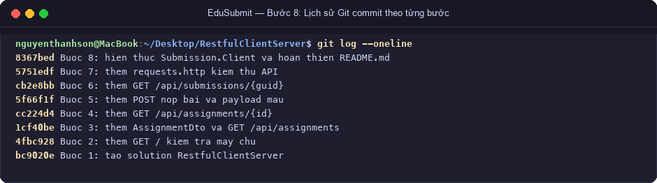
| STT | Kịch bản phá thử | Yêu cầu HTTP | Mã kỳ vọng | Mã thực tế | Đánh giá kết quả |
|---|---|---|---|---|---|
| 1 | Nộp bài vào bài tập không tồn tại | POST /api/assignments/999/submissions |
404 | 404 | Đạt: Cổng 1 chặn trả về ASSIGNMENT_NOT_FOUND |
| 2 | Nộp bài vào bài tập đã đóng hạn (Id=3) | POST /api/assignments/3/submissions |
400 | 400 | Đạt: Cổng 2 chặn trả về ASSIGNMENT_CLOSED |
| 3 | Nộp thiếu mã sinh viên | POST ... (studentCode: "") |
400 | 400 | Đạt: Cổng 3 chặn trả về INVALID_SUBMISSION |
| 4 | Nộp thiếu đường dẫn kho GitHub | POST ... (repositoryUrl: "") |
400 | 400 | Đạt: Cổng 3 chặn trả về INVALID_SUBMISSION |
| 5 | Tra cứu lượt nộp GUID không tồn tại | GET /api/submissions/00000000-... |
404 | 404 | Đạt: Trả về lỗi SUBMISSION_NOT_FOUND |
| 6 | Truyền GUID sai định dạng | GET /api/submissions/abc |
404 | 404 | Đạt: Routing constraint :guid chặn chuẩn xác |
| 7 | Quên header Content-Type khi nộp | POST ... (no Content-Type) |
415 | 415 | Đạt: Kestrel từ chối Unsupported Media Type |
| 8 | Gọi sai phương thức PUT trên URI hợp lệ | PUT /api/assignments/1 |
405 | 405 | Đạt: Trả về 405 Method Not Allowed |
Phân tích sâu cơ chế hoạt động của giao thức HTTP và nguyên lý thiết kế hệ thống phân tán RESTful.
1. Tại sao trả về 201 Created thay vì 200 OK?
200 OK là mã trạng thái chung biểu thị yêu cầu đã được máy chủ tiếp nhận và xử lý thành công.201 Created là mã có ngữ nghĩa chuyên biệt, khẳng định rõ ràng rằng một hoặc nhiều tài nguyên mới đã được tạo thành công trên hệ thống sau yêu cầu đó.2. Vai trò của Header Location:
Location trả về địa chỉ định danh URI duy nhất (Canonical URI) của tài nguyên vừa được tạo (ví dụ: Location: /api/products/4 hoặc Location: /api/submissions/e75a5dfa-...).1. Bảo đảm an toàn kiểu dữ liệu (Type Safety):
200 OK hoặc 201 Created), phần body sẽ mang cấu trúc của DTO dữ liệu chính tắc (ví dụ: ProductDto hoặc SubmissionDto).400 Bad Request hoặc 404 Not Found), body sẽ mang cấu trúc của DTO lỗi (ví dụ: ApiError(Code, Message)).ProductDto khi server vừa trả về lỗi 400, bộ parser JSON sẽ không tìm thấy các trường tương ứng, dẫn đến việc DTO nhận toàn giá trị mặc định rỗng (Id=0, Name=null) gây sai lệch nghiệp vụ nghiêm trọng.2. Phòng chống sập ứng dụng (Fault Tolerance & Defensive Programming):
response.StatusCode giúp rẽ nhánh luồng thực thi an toàn: giải tuần tự DTO khi thành công, hoặc giải tuần tự ApiError khi thất bại để in thông báo lỗi chính xác ra giao diện người dùng mà không bao giờ làm ứng dụng bị văng ngoại lệ (crash).ASSIGNMENT_CLOSED, hoặc chuỗi JSON bị lỗi cú pháp).
GET /api/products/999 khi trong kho chỉ có 3 sản phẩm, hoặc mã GUID của lượt nộp bài không có trong bộ nhớ).
400 liên quan đến tính hợp lệ của nội dung yêu cầu (Payload/Rules), còn 404 liên quan đến sự tồn tại của đối tượng tài nguyên (Resource Identity).